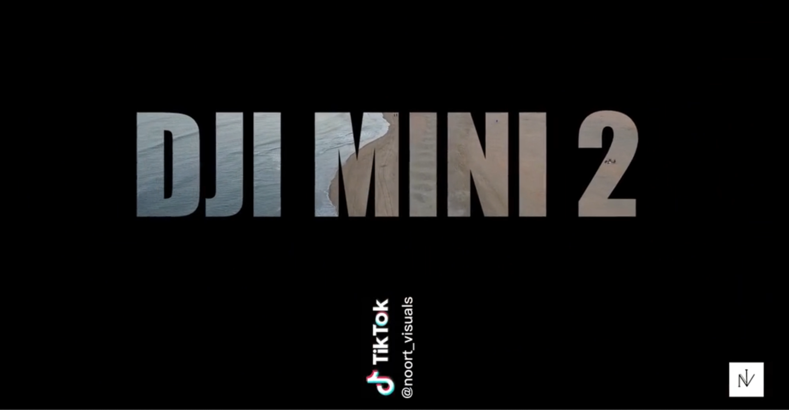

oort visuals
inloggen
Socials
Store
My story
Instellingen
Galerij van Noort visuals
DJI MINI 2

2 galerij
3galerij
Sun is shining
album
DJI Mini 2
In een rustig dorp, omringd door weelderige groene velden en kabbelende beekjes, woonde een oude man genaamd Samuel. Samuel was een verhalenverteller.
Sun is shining
In een rustig dorp, omringd door weelderige groene velden en kabbelende beekjes, woonde een oude man genaamd Samuel. Samuel was een verhalenverteller.